一、海南麻将
海南麻将在普通麻将的基础上增加了独有特色“番”，给玩法增色不少，加上花牌的特殊技术方式，使海南麻将更加富有趣味性，可玩性。
二、牌数
1 、牌型
海南麻将共144张牌，其中万、饼、条共计108张，风牌箭牌共计28张，花牌共计8张。
三、打牌
1.基本规则
（1）起牌
庄家起手那十四张牌，闲家拿十三张。庄家从牌中选出一张牌打出，此时其他三家有权利拿走打出的这张牌。
（2）得牌
一家打出的牌，其余三家可以吃、碰、杠、胡，但吃牌着仅限打牌者的下家，两家同时可以决策的时候，优先级顺序是：胡》碰杠》吃。
（3）补花
摸到花牌时，要将花牌单独摆出，并从牌塔补牌，有几张花牌补几张，如果补牌恰好又是花牌，则重复次过程。如果是起手花牌，则要等自己出牌时才可以补牌。
2.牌型及其基础分值
（1） 平胡（接炮平胡需要有番，此处仅展示其中一种，详细番型参加下文），1倍
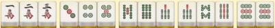
（2）碰碰胡，2倍
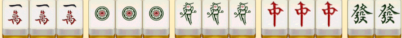
（3）清一色，2倍
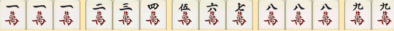
（4）七对，2倍
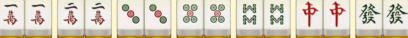
（5）豪华七对，3倍
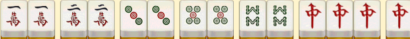
（6）十三幺，13倍
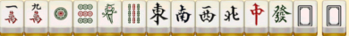
3.番型
（1）只吃不碰：成牌时手中除唯一的一个对子以外全部都是顺子
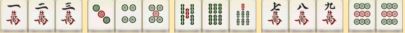
（2）门清：成牌时没有吃碰杠过牌
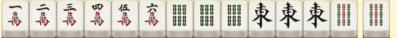
（3）有限：胡牌时手中对子数字为二、五、八，入二万、五饼、八条
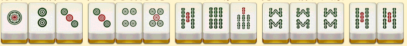
（4）箭牌刻：胡牌时手中有箭牌的刻子，明刻暗刻
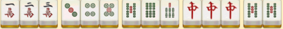
（5）番花对位：从庄家位置开始，逆时针计算四人的位置分别一次对应春夏秋冬冬季兰菊竹，当翻到对应自己位置的花牌时可以胡牌
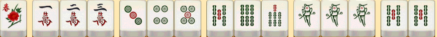
（6）风牌刻：从庄家位置开始，逆时针计算四人的位置分别依次对应东南西北，当手中有对应位置风牌的刻子时可以胡牌，明刻暗刻或者杠均可
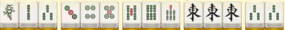
四、胡牌方式
点炮：获得别人打出的一张牌而胡牌，收取点炮者两倍的牌型分，收取其他人一倍牌型分
自摸：自己摸到一张牌而胡牌，收取三家两倍的牌型分
杠上开花：开杠补牌而胡牌，收取三家三倍牌型分
花上添花：补花胡牌，收取三家三倍牌型分
胡杠胡：别人弯杠的牌如果恰好可以胡，可以抢来这张牌胡牌，算杠牌者点炮，如果胡牌时有番，则按一般点炮胡计算，如果胡牌时无番，则被抢杠着一家三家的分数，还要额外出点炮的分数。
注意：抢杠胡（弯杠：已经碰了三张牌，自己摸到第四张，杠出）、截胡
截胡：一家打出一张牌同时给多家点炮，按逆时针顺序第一个胡的玩家算胡牌，后面的玩家不按胡牌计算。
五、可选玩法
1 庄闲
庄家+1分（如：庄家胡牌，每家收2分；闲家胡牌，收庄家2分，收其他闲家1分，有其他玩法继续累加）
2 连庄
每连庄一次+1分（庄家胡牌后下一局开始算连庄。连庄*n，庄家胡牌，收闲家n+1分，有其他玩法继续累加）
3上嘎
每个嘎+1分（如：小明上n嘎，小明胡牌时收小红n+m+1分，有其他玩法继续累加）
4 流局算分
流局（也称“黄庄、臭庄”），牌局中得到和扣分的分都要结算
5 花胡
勾选：摸到“春夏秋冬”或者“梅兰菊竹”算胡牌，摸到8张花算自摸；不勾选：摸到7张花算胡牌，摸到8张花算自摸
6 风牌当眼可胡
风牌（东南西北），有番玩法时，有一对非本方位的风牌作眼，其他都是顺子，可以胡牌
7 防勾脚
点炮玩家付给胡牌玩家三家的分，其他两家不付分
点杠玩家付给杠牌玩家三家的分，其他两家不付分
8自由上嘎
可以自由上嘎，没有限制
9 混一色
有番玩法时，混一色（万筒条其中一种加上大字（大字：风牌箭牌））有番可以胡牌
10 无风牌
在三人麻将时，勾选：不带东南西北麻将牌；不勾选：带东南西北麻将牌
11 不可吃
在三人麻将时，勾选：不能吃牌；不勾选：可以吃牌
六、其他加分项
杠：在有人胡牌的前提下，每个杠要按规则收取玩家的分数
明杠：自己手中有三张一样的，别人点出来第四张开杠，每家收1倍
暗杠：自己手中有四张一样的，开杠，每家收2倍
补杠：自己手中有一组明刻，有摸到第四张并开杠，每家收1倍
天胡、地胡：庄家起手牌直接胡牌称为天胡，闲家起手胡牌称为地胡，收取三倍牌型分
七、计分：
平胡 1倍
自摸 2倍
杠尾（花上添花） 3倍 补花胡牌，赢每人3倍底分。胜利者加9倍底分（摸到花牌后重新抓牌时胡牌）
门前清 1倍
清一色 2倍
抢杠胡 1倍
十三幺 13倍
杠上开花 3倍
碰碰胡 2倍
七对 2倍
豪华七对 3倍
天胡（庄家起手直接胡牌） 3倍
地胡（闲家直接起手胡牌） 3倍
明杠补杠每家给 1倍，暗杠每家给2倍
注意：倍数大于1倍有番型才能点炮。